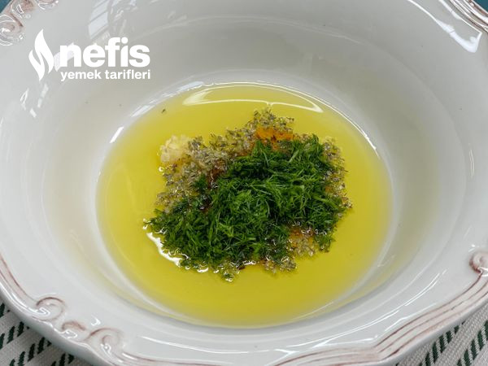
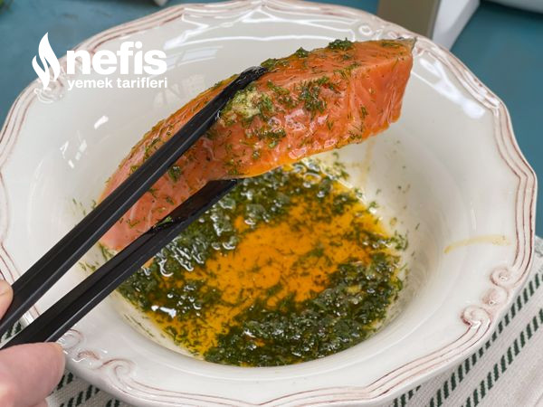
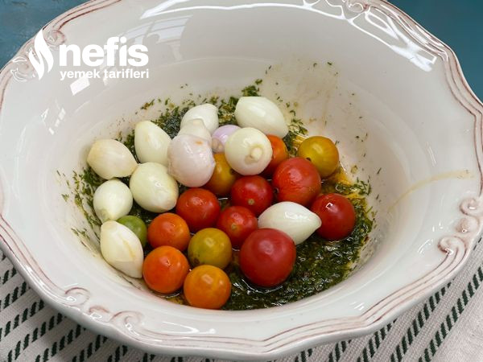
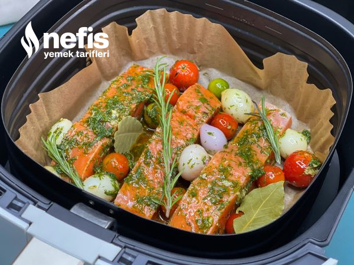
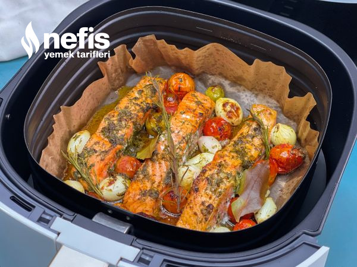
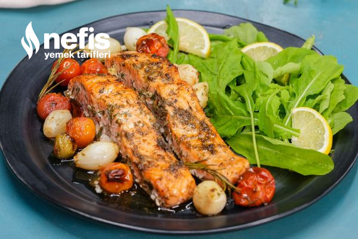

Airfry'da Somon
yamek olsun!
Airfry'da pratik bir şekilde somon yapmaya ne dersiniz? Somon besin değeri oldukça yüksek bir besindir. Airfry'da hazırladığınız somon yanında salata, pilav ya da sebze sote ile servis edebilirsiniz. Siz ve malzemeleriniz hazırsanız tarifin detayları aşağıda.
Hazırlanma süresi: 10dk
pişirme süresi: 15dk
kaç kişilik: 4 kişilik
pişirme süresi: 15dk
kaç kişilik: 4 kişilik
malzemeler
- 1 çay kaşığı tuz
- 1 çay kaşığı biber
- 1 çay kaşığı karışık otlar
- 1 çay kaşığı sarımsak granülleri
- 4 somon filetosu,derisi alınmış veya çıkarılmış
- ½ yemek kaşığı zeytinyağı
- Tuz
NASIL YAPILIR?
- Bir kapta zeytinyağı, sarımsak, kekik, toz kırmızı biber, karabiber, tuz, ince kıyılmış dereotu ve limon suyunu ekleyerek karıştıralım. 
- Dilimlenmiş somonların her tarafını hazırladığımız sosa bulayalım. 
- Kalan sosa çeri domatesleri ve arpacık soğanları alarak karıştıralım. 
- Pişirme kağıdı yerleştirilmiş airfryer haznesine sosladığımız somonları alalım. 
- Üzerine arpacık soğan ve çeri domatesleri, defne yapraklarını ve biberiyeleri ekleyerek 200°C de 12 dakika pişmeye bırakalım. 
- Sürenin sonunda pişen somon balıklarımız servise hazır. 